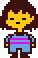

The Undertale
Wiki
The Undertale
Wiki ( Feeling that your identity and your destiny are in your own hands fills you with determination. )
( Feeling that your identity and your destiny are in your own hands fills you with determination. )
Frisk (Protagonist)

The Seventh Human and the Future of the Underground
Frisk is the playable character and the main protagonist of Undertale. After falling into the Underground, Frisk begins a journey to return to the surface, encountering various monsters and deciding the fate of the entire kingdom through their choices.
Physical Characteristics: A child with a neutral expression, short brown hair, and yellowish skin. They wear a blue shirt with two purple stripes, blue shorts, and simple shoes.
Personality
Frisk is a "silent protagonist," which allows their personality to be shaped by the player's actions:
- In the Pacifist Route: They prove to be an extremely kind, patient, and diplomatic individual, preferring to talk and spare even those who try to harm them.
- In the Genocide Route: They become a cold, efficient, and relentless figure, acting under the influence of the player (and Chara) to eradicate life in the Underground.
- Ambiguity: Despite their actions, Frisk maintains an impassive expression ("-_-") throughout almost the entire game, making their true feelings a mystery to other characters.
Abilities and Powers
Frisk's greatest power does not come from physical strength, but from their Determination:
- SAVE and LOAD: Due to their immense determination, Frisk has the ability to manifest save points that allow them to "reset" the timeline or return from moments of danger (such as death).
- ACT: During combat, Frisk can use the "Act" command to interact emotionally with monsters, discovering their sentimental weaknesses and finding ways to end the conflict peacefully.
- Survival: Frisk possesses remarkable resilience for a child, being capable of dodging complex magic attacks and using simple items (like monster food or a bandage) to recover instantly.
History
Frisk is the eighth human to fall into Mount Ebott. Unlike the previous humans, Frisk arrives at a crucial moment where the tension between humans and monsters is about to explode.
- Identity Revealed: For most of the game, the player believes the character's name is the one chosen at the start (the name of the "Fallen Child"). However, in the True Pacifist Route, it is revealed that the protagonist's name is actually Frisk.
- The Ambassador: In the perfect ending, Frisk becomes the official ambassador for monsters on the surface, symbolizing the bridge of peace between the two races.
Trivia
- Gender Neutral: Frisk is referred to using gender-neutral pronouns (they/them), allowing any player to identify with the character.
- Allergies: The game mentions that Frisk is allergic to Temmies.
- Ambidexterity: Some animations in the game (such as holding the umbrella or the attack effect) suggest that Frisk might be left-handed or ambidextrous.